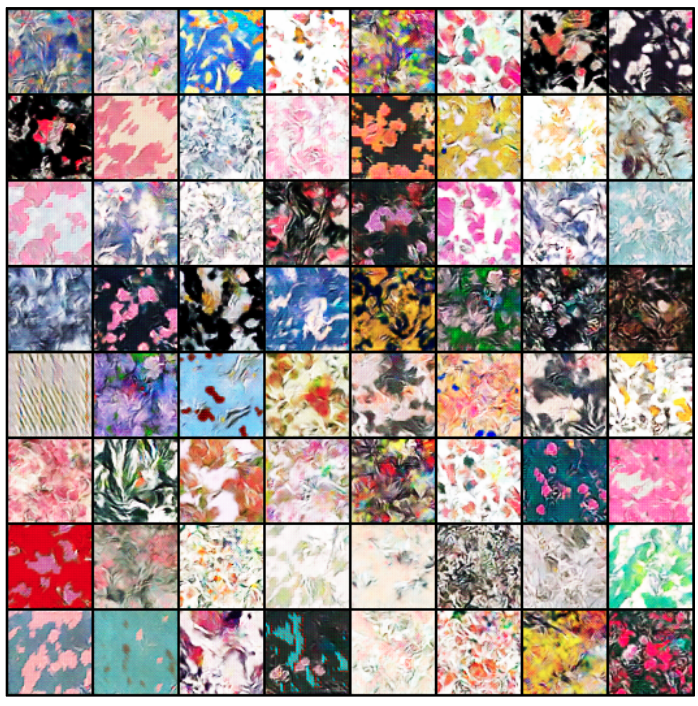

Design Pattern Generation using Generative Adversarial Networks
Used Self Attention GAN on self curated clothing design pattern datasets to generate new and appealing patterns which were visually pleasing.
Technologies Used: Python, OpenCV, Pytorch
Slides |
Report
Generated Results:
